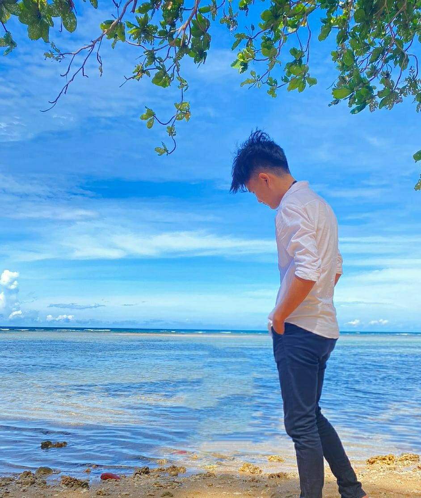
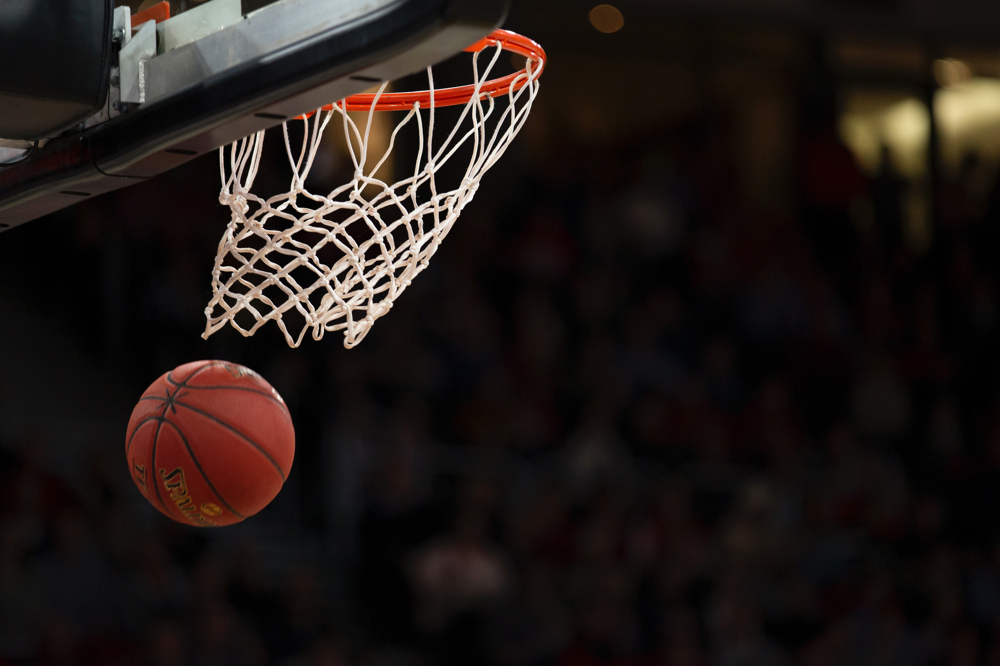
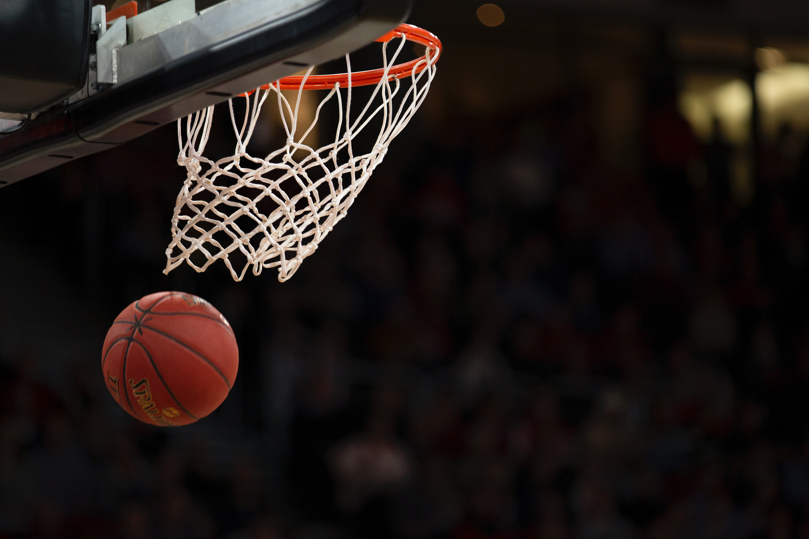
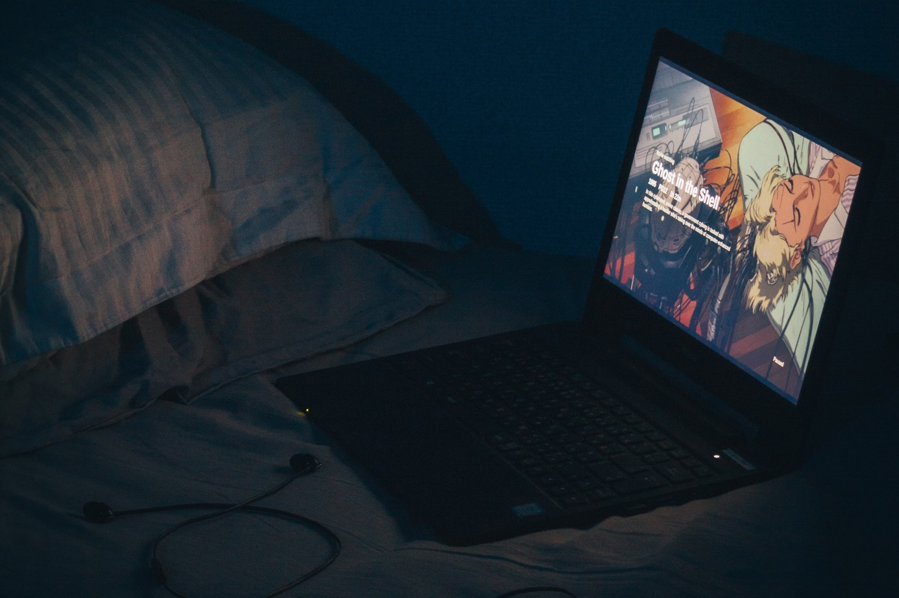
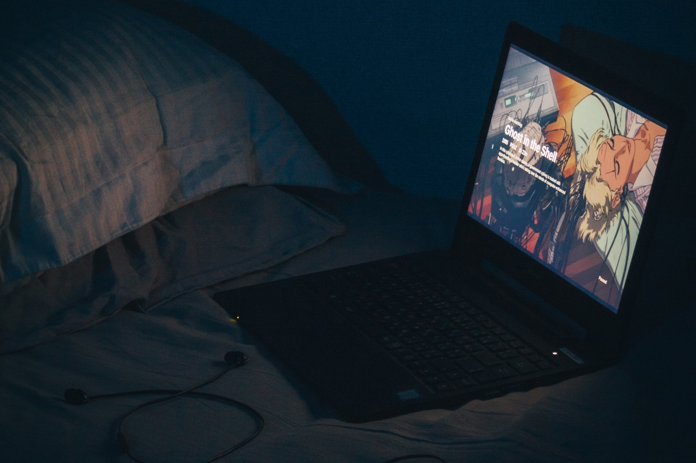

Saya Grantly Sorongan
Saya adalah orang indonesia, saya lahir di sorong. saya besar di sulawesi utara, Manado. Dari kecil saya sangat tertarik dengan dunia IT / Komputer. Saya sudah mulai belajar tentang komputer pada saat saya masih ber- sekolah SD, pada saat itu saya suka bermain di Warnet dan saat itulah saya mulai tertarik dengan komputer. Dan akhirnya pada saat saya SMK saya belajar lebih dalam tentang Komputer.

 

 
